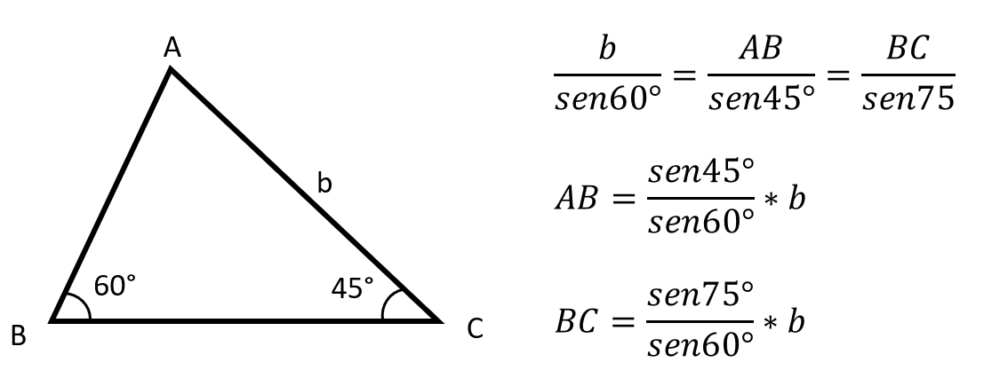

A Lei dos Senos determina que num triângulo qualquer, a relação do seno de um ângulo é sempre proporcional à medida do lado oposto a esse ângulo.
Esse teorema demonstra que num mesmo triângulo a razão entre o valor de um lado e o seno de seu ângulo oposto será sempre constante.
Assim, para um triângulo ABC de lados a, b, c, a Lei dos Senos admite as seguintes relações:

Exemplo
Para compreender melhor, vamos calcular a medida dos lados AB e BC desse triângulo, em função da medida b do lado AC. Podemos estabelecer as seguintes relações:
Logo, AB = 0,816b e BC = 1,115b.
Os ângulos de 30º, 45º e 60º são os mais usados nos cálculos de trigonometria. Por isso, eles são chamados de ângulos notáveis. Confira abaixo um quadro com os valores:
| Relações trigonométricas | 30° | 45° | 60° |
|---|---|---|---|
| Seno | 1/2 | √2/2 | √3/2 |
| Cosseno | √3/2 | √2/2 | 1/2 |
| Tangente | √3/3 | 1 | √3 |
Aplicação da Lei dos Senos
Utilizamos a Lei dos Senos nos triângulos acutângulos, onde os ângulos internos são menores que 90º (agudos); ou nos triângulos obtusângulos, que apresentam ângulos internos maiores que 90º (obtusos). Nesses casos, também é possível utilizar a Lei dos Cossenos.
O objetivo principal da utilização da Lei dos Senos ou Cossenos é de descobrir as medidas dos lados de um triângulo e ainda, de seus ângulos.
E a Lei dos Senos no Triângulo Retângulo?
Como mencionado acima, a Lei dos Senos é utilizada nos triângulos acutângulos e obtusângulos.
Já nos triângulos retângulos, formados por um ângulo interno de 90º (reto), utilizamos o Teorema de Pitágoras e as relações entre seus lados: cateto oposto, adjacente e hipotenusa.

Esse teorema possui o seguinte enunciado: "a soma dos quadrados de seus catetos corresponde ao quadrado de sua hipotenusa". Sua fórmula é expressa:

Assim, quando temos um triângulo retângulo, o seno, cosseno e tangente serão as razões demosntradas abaixo: